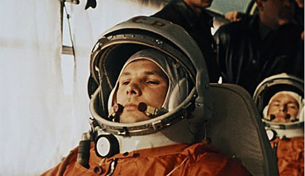

Yuri Gagarin
The man who conquered the space

Yuri Alekseyevich Gagarin in the bus just before the launch. On the background: his backup spaceman German Titov (sitting) and his support team (standing). April 12th, 1961.
Here's a time line of Gagarin's life:
- 1934 - Born in Klushino village, Smolensk region, USSR.
- 1950 - Aged 16, Gagarin leaves his parents and works at a steel plant near Moscow. He also enrolls at a local "young workers" school.
- 1951 - He is selected for further training at the Industrial Technical School, where he studied tractors. While studying, Gagarin volunteered at a local flying club, where he trained to fly.
- 1955 - Gagarin is accepted to the First Chkalovsky Higher Air Force Pilots School in Orenburg. He began training on the Yak-18 and the MiG-15.
- 1957 - Yuri is commissioned a lieutenant in the Soviet Air Forces having accumulated 166 hours and 47 minutes of flight time.
- 1959 - Gagarin is promoted to the rank of senior lieutenant as he accumulated 265 hours of flight time. Three weeks later he was interviewed for qualification to the space program.
- 1960 - Twelve candidates including Gagarin are chosen out of 154 qualified pilots to train for the space program.
- 1961 - The spacecraft (Vostok-1) was launched from Baikonur Cosmodrome. Aboard was Gagarin, the first human to travel into space. He orbited for 108 minutes before returning to Earth.
- 1962 - He spends several years working on designs for a reusable spacecraft. He becomes a lieutenant colonel of the Soviet Air Forces and a colonel next year. On December Gagarin becomes Deputy Training Director of the cosmonaut training facility.
- 1968 - While on a routine training flight from Chkalovsky Air Base, Gagarin and flight instructor Vladimir Seryogin died at the age of 34 when their MiG-15UTI crashed near the town of Kirzhach.
"Poyekhali!" (Поехали!, 'Off we go!') - Gagarin's farewell to Korolev using the informal phrase later became a popular expression in the Eastern Bloc that was used to refer to the beginning of the Space Age.
-- Yuri Gagarin to Korolev